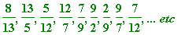

Cantor (1845-1918)
One could spend one's whole life thinking about, and talking about nothing else but Cantor. Cantor, of whom Hilbert declared: No one shall drive us from the Paradise that Cantor has created for us...
Suffice it here to remark (as a gross understatement!) that Cantor proved (1874) transcendental numbers existed ... and, in fact, that transcendental numbers are more numerous than algebraic numbers (strictly speaking that the (infinite) cardinality of the transcendental numbers is greater than the (infinite) cardinality of the algebraic numbers).
Many readers will know of Cantor's diagonal proof that the real numbers are uncountable, but not all may be familiar with his vastly superior nested interval proof. For me (based on experience) the way to introduce Cantor's work is via the playful Hilbert's Hotel (I used such an approach many years ago, with non-mathematicians - in the mid 80's - when I used to offer yearly extramural courses at University College Dublin). I teach a second year undergraduate course The Real Number System and Cantorian Set Theory at my college, which the interested reader may read about at my web site (there one will find: summary notes, exam paper, Maple test (irreducible polynomials, continued fractions, etc)).
There is, of course, Cantor's revolutionary (1873)
countable
enumeration of the rationals, with its slightly unpleasant casting out of
duplicates
... In that connection some of my readers may not be familiar with the quite wonderful Calkin-Wilf (2000)
explicit
enumeration (which, if you haven't seen it, can you
figure it out
?) of the positive rationals:
, ...
which is elaborated in Aigner and Ziegler's
Proofs from the BOOK
. A & Z write:
"Thus we have obtained a beautiful formula for the successor f(
x
) of
x
found recently by Moshe Newman ... "
According to Newman, the above Calkin-Wilf enumeration is the (infinite sequence of) iterates (line 6 in following procedure) of the function
(line 3), applied to initial value
 (line 4),
(line 4),
where [
x
] and {
x
} are the
integral
and
fractional
parts of
x
>
CWNew := proc(bound)
local f, r, k;
f := x -> 1/(floor(x) + 1 - frac(x)):
r[1] := 1/1:
for k from 2 to bound do
r[k] := f(r[k-1])
od: print(seq(r[k], k = 1..bound), `... etc`); end:
> CWNew(50);

>